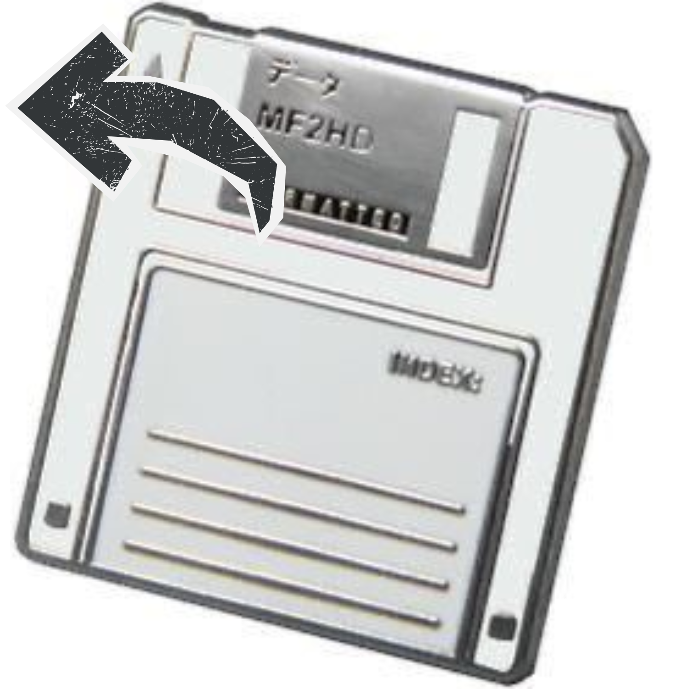
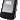
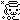
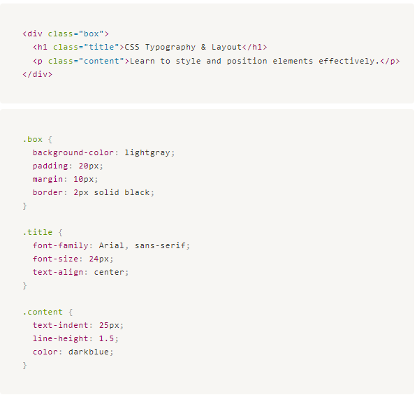

|  |
| |||
Formatting Text & Layout with CSS Typography and Box Model Selectors, div, span, and link are foundational CSS tools that allow you to target specific HTML elements, structure web content, and define interactive styles for enhanced design and functionality. Typography Basics CSS typography controls how text is styled and displayed on a webpage using properties like font family, size, weight, and style. Key Typography Properties:
Text Properties:
 List Styling CSS provides control over bullet styles, positioning, and custom images for lists. Key List Properties:
Pseudo-Elements Pseudo-elements style specific parts of an element, such as the first letter or line. Common Pseudo-Elements:
Box Model The CSS box model includes margins, borders, padding, and content, defining how elements are spaced and aligned. Key Properties:
Positioning and Layout CSS positioning and layout properties determine how elements are placed on a webpage. Position Values:
Offset Properties: Control distances from top, right, bottom, and left. Float: Positions an element to the left or right, with surrounding text wrapping around it. Background Styling CSS allows full customization of element backgrounds with color, images, and positioning. Key Background Properties:
Borders Borders outline elements with various styles and thicknesses. Key Properties:
Example of this:  |
||||
|
Time to call home? (click the image) | ||||
© 2024 Nine's Portfolio | All rights reserved.